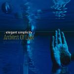

| Artist: | Elegant Simplicity |
| Title: | Architect Of Light |
| Label: | Proximity Records ESCD 14 |
| Length(s): | 70 minutes |
| Year(s) of release: | 2002 |
| Month of review: | [09/2002] |
| 1) | Time To Breathe | 6.06 |
| 2) | Stars On The Water | 5.47 |
| 3) | A Crack In The Ice | 17.58 |
| 4) | Architect Of Light | 16.39 |
| 5) | Capillary Attraction | 23.35 |
Stars On The Water follows near seemlessly on its predecessor, its intro being what sounds like a guitar solo. This impression, however, quickly is evaporated by the sound of Senior's somewhat flat singing (not unlike Rick Ray's). Still, this track is easily more symphonic than the one before, and not bad at it, either.
After two tracks that still have a fair claim at the monniker "song", we now move into epicland (or at least, the track lengths seem to suggest so), the seeming land of wonders. The three minute plus flute intro to A Crack In The Ice immediately draws attention to this change of scenery. After a vocal section a longish instrumental section follows that has a rather meandering quality, not completely unlike Camel. It takes seven to eight minutes before a bit of life is brought on, albeit by a guitar solo that doesn't inspire all that much. This track is mostly instrumental with keys not all that inspired and dito guitar.
Architect Of Light is rather more up tempo, and more jazzy, however, we remain in the vicinity of Meanderpolis. After seven minutes, all this turns out to be an intro. However, it doesn't take long for the onrushing Meanderers (as far that's not an oxymoron) to overtake Ken, even though he bravely fights them. It should be noted, though, that there's a rather good guitar solo towards the end of the track.
Capillary Attraction starts with a rather strong melody, brought out pretty strongly. Nice start, should have done that before. Unfortunately the semi-lethargy sets in once again after a couple of minutes, but not as badly as before. The following has some Floydian bits (bet you didn't think those could spice things up) and even something of a waltz. Despite the bompy basses and tacky guitars, reminding me of a musical past most of us are trying to forget, I'd say this is the best of the three "epics" on this discs.